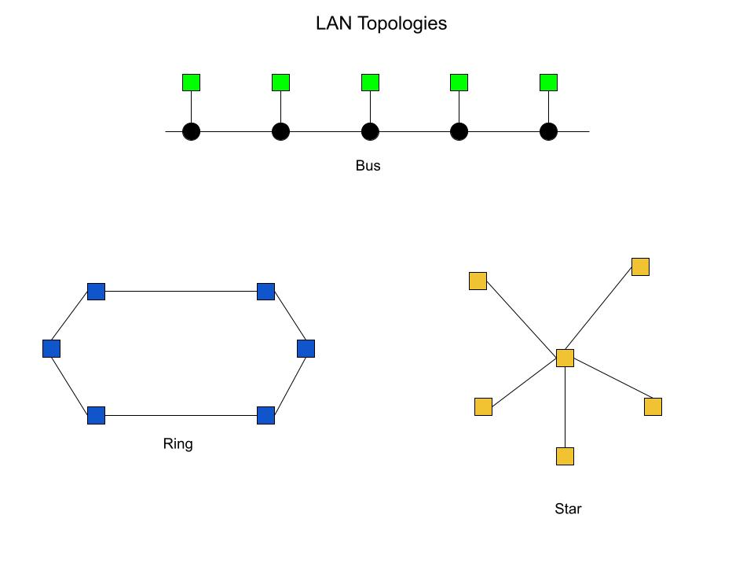

Chapter 7: Terms & Information
Constantinos Vassalos
Briefly describe or define:
- computer network - a set of independent computers interconnected to share resources and information
-
analog device - is continuous and the quantity the output is determined by the quantity of physical input.
A good example is a record player.
-
digital device - non-continuous, meaning it is either on or off, or, determined by 1s or 0s. A good example
is a CD player.
- modem - modulates, or alters, analog data into digital data to be transmitted via network
- bandwith - the rate at which information can be sent and received
- ethernet - the method of connecting computers by wire in a local area network or a wide area network
- WLAN - a local computer network, made up of two or more devices, that is connected wirelessly
- IEEE 802.11 wireless network standard - a set of techical standards for a local area network, also more commonly known as "Wi-Fi"
- MAN - a medium distance computer network, typically the size of several blocks up to the size of an entire city, MAN stands for "metropolitan area network"
- Internet of Things - everyday objects, that have sensors and an internet connection to connect and share data
- LAN - "local area network", a network connecting computers and devices in a relatively close proximity
- repeater - a device that amplifies and sends a signal forward to strengthen LAN network
- bridge - like a repeater but "smarter", it sends a signal forward based on if the destination is on another "node" or network
- WAN - "wide area network", the widest network that connects computers and devices all accross the world
-
packet and packet switching - a packet is a unit of transmission with a fixed maximum size in a WAN, and packet switching is when the packet is broken down
into multiple pieces sent independently to be assembled at the destination device
- ISP - "internet service provider", organizations that provide access to the internet for individuals and larger networks
- firewall - hardware and software put in place to prevent unauthorized access to a company's or individual's private data
- protocol - a mutually agreed-upon set of rules, conventions, and agreements for the efficient and orderly exchange of information
- cloud computing - providing software, services, data, and computing on a remote server that a user or company can access through an internet connection
- net neutrality - according to "net neutrality", ISPs must treat all users, all platforms, and all content equally so that there are no "tiers" of the internet
Briefly describe the five layers of TCP/IP (the Internet protocol hierarchy):
- Layer 1. Physical layer - protocols that govern the exchange of binary digits across a physical communication channel
- Layer 2. Data link layer - this layer is the protocol layer that transfers data between nodes on a network segment across the physical layer
- Layer 3. Network layer - the network layer is responsible for packet forwarding including routing through intermediate routers
- Layer 4. Transport layer - this layer provides end-to-end communication services for devices
- Layer 5. Application layer - the rules for implementing the end-user services provided by a network
List and briefly describe at least 3 network services and benefits:
- e-mail - modern business can not function without email, it is a quick a direct way to send messages to a person, or a whole organization, to
collaborate, share ideas, plan, or organzie.
- File Sharing - if there is a file to share with multiple user, this is an incredibly valuable tool. Instead of needing everyone to connect to your
device, or pass around a usb or hard drive, you can upload a file to a server online and anyone that needs the data can access it with an internet connection.
- Online Gaming - online gaming is a huge hobby, and huge industry today. It enables users to be able to play video games together, and against one another.
It is a wonderful way for people to stay connected, or to blow off steam after a long day of work.
IEEE
- What does the acronym, IEEE, stand for?
- Institute of Electrical and Electronics Engineers
- What is the mission and vision of IEEE?
- IEEE's core purpose is to foster technological innovation and excellence for the benefit of humanity.
- IEEE will be essential to the global technical community and to technical professionals everywhere, and
be universally recognized for the contributions of technology and of technical professionals in improving global conditions.
- What are the benefits of IEEE membership?
- IEEE members can access information on local events and activities by signing in to IEEE Collabratec®, an integrated multi-functional platform and global network of
technology-focused professionals, leveraging IEEE's extensive knowledge base and community of thought-leaders. Once signed in, users can:
- Network with other technology professionals
- Establish a professional profile highlighting your accomplishments
- Join and participate in discussions on various technical interests
- Create a group to share and collaborate on projects
- Discover IEEE events and activities throughout the world
- What are the requirements for IEEE student membership, and how much does undergraduate membership cost annually for students from the USA?
- A Student member must carry at least 50% of a normal full-time academic program as a registered undergraduate or graduate student in a regular course of study in IEEE-designated fields.
- IEEE Student Membership Dues: $32.00
LAN Topologies

Diagram of Three Different Lan Topologies